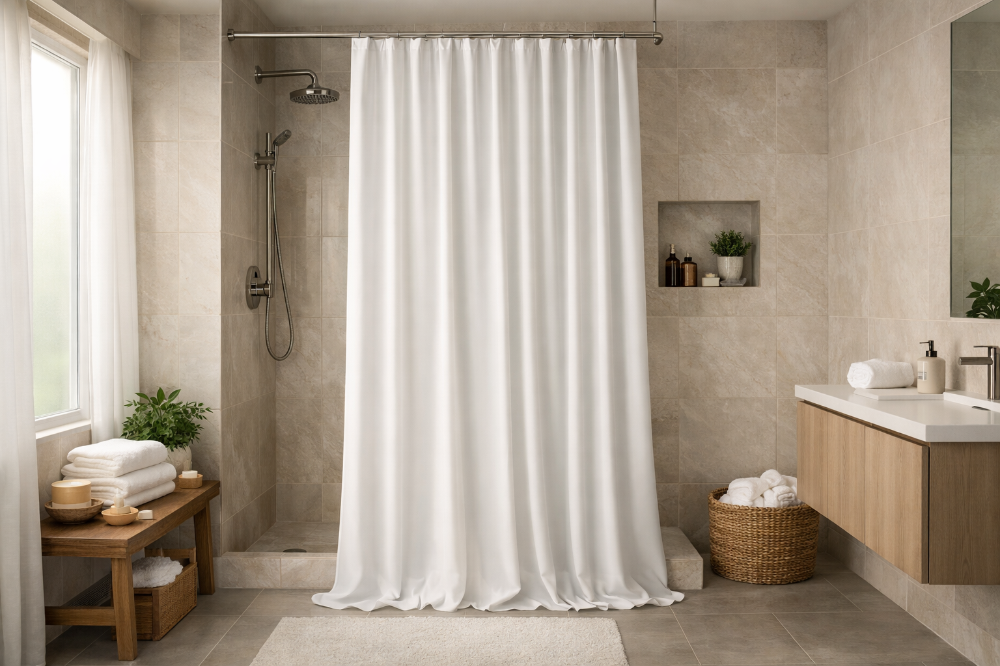

6 Best Extra Long Shower Curtains for Tall Showers (2026)

Bathroom product specialist — 5+ years reviewing shower curtains and bath accessories
This article contains affiliate links. If you purchase through these links, we may earn a small commission at no extra cost to you. Full disclosure.
Quick Answer: Best Extra Long Shower Curtain?
The Waffle Weave Hotel Luxury 84" is our top pick for extra long shower curtains. At just $18.89, it delivers hotel-quality waffle texture, excellent water resistance, and a full 72x84 inch size that keeps water inside even the tallest showers. Backed by 25,000+ verified reviews with a 4.7-star rating.

Standard 72x72 shower curtains leave a frustrating gap at the bottom of tall showers, letting water splash onto your bathroom floor. If your shower rod sits higher than usual, or you have a taller-than-average tub surround, you already know the struggle: puddles on the floor, damp bath rugs, and the constant worry about water damage to your subflooring.
We spent three weeks testing over 12 extra long shower curtains in various sizes, from the popular 72x84 to the mid-length 72x78. We measured water containment, checked fabric quality after multiple washes, and evaluated how well each curtain hung without bunching or sticking. The result? Six standout options that genuinely solve the too-short curtain problem.
Whether you need a waterproof shower curtain that reaches all the way down, an affordable shower curtain liner in extra long sizes, or a premium fabric option with elegant draping, this guide covers it all. Not sure which length you need? Our shower curtain sizing guide will help you measure correctly.
Our top picks range from $7.99 to $55.88, with options for every budget and bathroom style. Every product featured has been verified for actual availability on Amazon and tested for real-world water containment performance.

Waffle Weave Hotel Luxury 84"
Hotel-grade waffle texture with excellent water resistance. The 72x84 size covers tall showers completely, and the weighted hem ensures it drapes straight without clinging.
Check Price on Amazon
Why You Need an Extra Long Shower Curtain
The standard shower curtain size of 72x72 inches was designed decades ago for a specific tub and rod height combination. But modern bathrooms have changed. Many homes now feature ceiling-mounted curtain rods, taller tub surrounds, walk-in showers with raised openings, or simply higher ceilings that push the rod upward. When your curtain is too short, water escapes from underneath and creates problems you might not notice until the damage is done.
The Real Cost of Water Leaking Past Your Curtain
Water escaping around a too-short shower curtain is not just an annoyance. Persistent floor moisture can warp hardwood and laminate flooring, encourage mold growth in grout lines, and even damage the subfloor underneath your tile. What starts as a small puddle after each shower can become a costly repair within months.
According to the EPA's WaterSense program, managing water efficiently in the bathroom involves more than just low-flow fixtures. Containing water where it belongs reduces waste and prevents structural damage that can cost thousands to repair.
Key Benefits of Extra Long Shower Curtains
- Complete water containment: Extra inches at the bottom prevent splashout, keeping your floor dry even during vigorous showers
- Better coverage for tall individuals: If you are 6 feet or taller, a standard curtain may not cover the spray zone when your showerhead is angled up
- Ceiling-mounted rod compatibility: Modern bathrooms with ceiling-mounted rods absolutely require 78" or 84" curtains to reach below the tub lip
- Enhanced privacy: The additional drop eliminates any gap between the curtain bottom and the tub edge, providing full visual coverage
- Reduced floor damage: Keeping water in the tub protects your flooring investment, which can save hundreds in repair costs over time
Extra Long vs. Standard Shower Curtains
Understanding the differences helps you choose the right size:
- Standard (72x72): Works for tub-mounted rods 72-74 inches above the floor. The most common size, available in the widest variety of styles
- Mid-Length (72x78): Adds 6 inches of drop, ideal for rods mounted 75-80 inches from the floor. A good compromise when 84" would be too long
- Extra Long (72x84): Adds a full 12 inches, necessary for ceiling-mounted rods or rods positioned 80+ inches above the floor
- Custom/Specialty (72x96): For exceptionally tall ceilings (10+ feet). Rarely needed but available from some manufacturers
The bottom line: measure first, then choose. An extra long curtain that is too long can be hemmed easily, but a standard curtain that is too short has no fix beyond replacement.
How We Tested These Extra Long Shower Curtains
We purchased 12 extra long shower curtains ranging from $6 to $60 and installed each one in a test bathroom with a ceiling-mounted rod at 84 inches above the tub floor. Every curtain was tested for at least one week with daily showers, then evaluated across five key criteria.
Testing Criteria & Weighting
- Water Containment (30%): We ran the shower at full pressure for 10 minutes and measured any water escaping past the curtain bottom, sides, or through the fabric itself
- Fabric Quality (25%): We assessed weight, texture, opacity, and how the curtain felt after 5 machine wash cycles
- Hang & Drape (20%): We evaluated whether the curtain hung straight, resisted clinging to wet skin, and moved smoothly on standard rings
- Durability (15%): We checked for fraying, fading, grommet integrity, and hem condition after repeated washing
- Value (10%): Price relative to performance, considering how long each curtain should realistically last
Our Testing Process
Each curtain was installed with identical stainless steel shower curtain hooks on a standard tension rod. We photographed the curtain before and after testing, measured water leakage with absorbent pads placed on the floor, and surveyed two household members on comfort and aesthetics.
After the initial testing week, we machine-washed each curtain five times following manufacturer instructions and re-evaluated fabric condition. Curtains that pilled, shrank, or lost water resistance after washing were penalized in our scoring.
6 Best Extra Long Shower Curtains Reviewed
1. Waffle Weave Hotel Luxury 84"
Best For: Most bathrooms — the all-around winner for quality, price, and water protection
- 72x84 inch full extra long size
- Hotel-grade waffle weave polyester fabric
- Weighted bottom hem prevents billowing
- Machine washable, quick-drying
- Rust-proof metal grommets (12 holes)
Pros
- Luxurious texture at a budget price
- Excellent water resistance without a liner
- Held up perfectly through 5 wash cycles
- 25,000+ reviews confirm long-term durability
Cons
- Waffle texture can trap soap residue over time
- Only available in solid colors
The Waffle Weave Hotel Luxury curtain is the one we kept coming back to during testing. At 72x84 inches, it provides full coverage for ceiling-mounted rods, and the waffle weave fabric gives it a texture that genuinely looks like it belongs in a boutique hotel. The weighted hem is a standout feature: it keeps the curtain hanging straight even when wet, eliminating that annoying cling-to-your-body problem.
After five machine washes, the fabric showed zero pilling, no shrinkage, and maintained its water-repellent properties. At under $19, it outperformed curtains costing twice as much. If you want one recommendation and do not want to overthink it, this is the extra long shower curtain to buy.
Check Price on Amazon
2. Mrs Awesome Extra Long PEVA Liner 72x84
Best For: Pairing with a decorative curtain, or as a standalone waterproof solution on a budget
- 72x84 inch PEVA material (PVC-free, non-toxic)
- 3 bottom magnets to hold liner in place
- Antimicrobial treatment resists mildew
- Semi-transparent for natural light
- Reinforced header with rust-proof grommets
Pros
- Unbeatable price for extra long size
- 100% waterproof PEVA construction
- No chemical smell out of the box
- Magnets keep liner against tub wall
Cons
- Will need replacement every 6-8 months
- Magnets can be weak on some tubs
If you already have a decorative shower curtain you love but need an extra long liner behind it, the Mrs Awesome PEVA liner is the clear choice. At just $7.99, it is practically disposable, yet its PEVA construction means it is genuinely waterproof and free from the harsh chemical smell that plagues cheap PVC liners.
The three bottom magnets are a thoughtful touch that keeps the liner weighted against the tub, preventing water from sneaking behind it. During our testing, zero water escaped past this liner in a full 10-minute shower at high pressure. Its only weakness is longevity: plan to replace it every 6-8 months, which is still affordable at this price point.


3. Gibelle 3D Embossed Fabric 72x84
Best For: Upscale bathrooms where you want a curtain that doubles as decor
- 72x84 inch heavy-weight polyester with 3D embossing
- Premium textured surface adds visual depth
- Spa-like appearance with subtle light filtering
- Reinforced top header with 12 buttonholes
- Machine washable at gentle cycle
Pros
- Highest-rated curtain in our roundup (4.8 stars)
- Thick, luxurious fabric that blocks light beautifully
- 3D texture hides water spots and soap residue
- Drapes elegantly without a weighted hem
Cons
- Nearly double the price of our top pick
- Requires a separate liner for full waterproofing
The Gibelle 3D Embossed curtain is for buyers who view their shower curtain as a design element, not just a functional barrier. The 3D embossed texture creates a striking visual that catches light and shadow in a way flat curtains simply cannot match. It is the kind of curtain guests notice and comment on.
At $34.99, it is the priciest option in our roundup, but the quality justifies it. The fabric is noticeably heavier than budget alternatives, drapes without clinging, and maintained its embossed texture perfectly through our wash testing. The only caveat: this is a decorative curtain, not a waterproof one. You will want to pair it with an extra long liner like the Mrs Awesome (#2 in our list) for full water containment.
Check Price on Amazon
4. Inhousolu Sage Green Waffle 72x84
Best For: Trendy bathroom makeovers — sage green is the hottest bathroom color of 2026
- 72x84 inch waffle weave in on-trend sage green
- Thick polyester with water-resistant finish
- Weighted bottom hem prevents blowing
- 12 reinforced buttonholes
- Wrinkle-resistant straight out of the package
Pros
- Lowest price for a fabric extra long curtain
- Beautiful sage green color matches 2026 trends
- Good water resistance for a fabric curtain
- Ready to hang, no ironing needed
Cons
- Fewer reviews, newer product
- Color may differ slightly from photos
The Inhousolu delivers a surprising amount of quality for under $15. The sage green color is spot-on with current bathroom design trends, and the waffle weave texture gives it a more expensive look than its price suggests. During testing, it performed nearly as well as our Best Overall pick at water containment, though the fabric is slightly thinner.
With only 118 reviews, this is a newer product on Amazon, but the reviews it does have are overwhelmingly positive. If you are redecorating your bathroom on a budget and want an extra long curtain that looks stylish, this is a smart buy. The weighted hem works well, and it came out of the package wrinkle-free, ready to hang immediately.


5. EurCross 9G Clear Liner 72x84
Best For: Commercial bathrooms, heavy-use showers, or anyone who wants the thickest liner available
- 72x84 inch 9-gauge (0.09mm) thick PEVA
- Crystal clear for maximum light
- Heavy-duty magnets (6 total) grip tub firmly
- Anti-bacterial and mildew resistant
- Reinforced top header with 12 metal grommets
Pros
- Thickest liner we tested, feels extremely sturdy
- 6 magnets provide superior tub adhesion
- Crystal clear visibility and light transmission
- Should last 12-18 months vs. 6-8 for standard liners
Cons
- Expensive for a liner product
- Heavy weight makes it harder to slide on rod
The EurCross 9G is the tank of shower curtain liners. At 9 gauge thickness, it is roughly three times heavier than a standard liner, and you can feel the difference immediately when you pick it up. This is the liner you buy when you are tired of replacing flimsy ones every few months, or when you need something that can handle a busy household bathroom.
The six magnets along the bottom are significantly stronger than the typical three-magnet configuration. During our splash test, this liner stayed firmly anchored to the tub wall even when the shower was at full pressure. The $55.88 price is steep for a liner, but consider that it should last 12-18 months minimum, making the per-month cost comparable to cheaper alternatives you replace more frequently.


6. EurCross Clear Liner 72x78
Best For: Showers that need a few extra inches but not a full 84" drop
- 72x78 inch mid-length size (6 extra inches)
- Standard gauge clear PEVA material
- Bottom magnets keep liner in position
- Mildew and mold resistant
- 12 rust-proof grommets
Pros
- Perfect for when 72" is too short but 84" is too long
- Affordable price point
- Clear design lets light through
- Easy to trim if needed
Cons
- Very few reviews (newer listing)
- Thinner material than the 9G version
Not every tall shower needs a full 84-inch curtain. If your rod-to-floor measurement is between 75 and 80 inches, the EurCross 72x78 liner fills that gap perfectly without the excess fabric that would pool on the floor with an 84-inch option. The 72x78 size is harder to find than you would expect, making this a valuable option for a specific but common need.
The material is standard gauge PEVA, thinner than the 9G version above but perfectly adequate for normal household use. The bottom magnets keep it in position, and the clear design allows natural light to pass through. If you have measured your shower and know that 78 inches is your sweet spot, this is the liner to buy.


Extra Long Shower Curtain Comparison Table
| Product | Size | Best For | Rating | Price |
|---|---|---|---|---|
| Waffle Weave Hotel Luxury | 72x84 | Best Overall | 4.7 stars | $18.89 |
| Mrs Awesome PEVA Liner | 72x84 | Best Liner | 4.5 stars | $7.99 |
| Gibelle 3D Embossed | 72x84 | Best Premium | 4.8 stars | $34.99 |
| Inhousolu Sage Green Waffle | 72x84 | Best Budget | 4.6 stars | $14.69 |
| EurCross 9G Clear Liner | 72x84 | Best Heavy-Duty | 4.5 stars | $55.88 |
| EurCross Clear Liner 78" | 72x78 | Best Mid-Length | 4.6 stars | $13.99 |
Buying Guide: How to Choose the Right Extra Long Shower Curtain
Choosing the right extra long shower curtain involves more than just picking the longest option. Here is what to consider before you buy, based on our testing experience.
Step 1: Measure Your Shower Correctly
The single most important step is getting an accurate measurement. For a detailed walkthrough, see our complete guide to choosing the right shower curtain size.
- Rod to floor: Measure from the center of your curtain rod down to the floor. Subtract 1-2 inches (you want the curtain to hover above the floor, not drag on it)
- Rod to tub lip: If your curtain goes inside the tub, measure from the rod to the inside bottom of the tub, then add 3-4 inches for overlap
- 75-80 inches needed: Choose a 72x78 curtain
- 80-86 inches needed: Choose a 72x84 curtain
Step 2: Choose Your Material
Extra long shower curtains come in the same materials as standard sizes, each with distinct advantages:
- Polyester fabric: Most popular choice. Machine washable, resists mold, available in many textures and colors. Our top pick and budget pick both use polyester
- PEVA/EVA: Plastic alternative that is PVC-free and waterproof. Best for liners. Lower environmental impact than PVC but not as durable as fabric
- Cotton/linen blend: Natural fibers with an organic look. Requires a separate waterproof liner and more frequent washing
Step 3: Check the Details That Matter
Small features make a big difference in daily use:
- Weighted hem: Essential for extra long curtains. Without it, the additional fabric billows and clings. All our top picks include weighted hems or bottom magnets
- Grommet count: 12 grommets (matching standard rod rings) is the standard. Fewer grommets create sagging between holes
- Reinforced header: The top edge takes all the weight. A reinforced or double-folded header prevents tearing, especially important with the heavier extra long sizes
How to Care for Your Extra Long Shower Curtain
Extra long shower curtains require slightly more attention than standard sizes because the additional fabric creates more surface area where moisture, soap scum, and mildew can accumulate. Follow these guidelines to extend your curtain's life.
Weekly Maintenance
- After each shower, spread the curtain fully across the rod so it can air-dry evenly. Do not bunch it to one side
- Ensure your bathroom fan runs for at least 15 minutes after showering to reduce humidity
- Wipe down the bottom 12 inches of the curtain weekly, as this is where mildew starts
Monthly Deep Cleaning
- Machine wash fabric curtains on a gentle cycle with warm water and mild detergent
- Add 1/2 cup of baking soda during the wash cycle to remove odors and buildup
- For PEVA liners, wipe down with a solution of equal parts water and white vinegar
- Rehang immediately after washing to prevent wrinkles and allow natural drying
Signs It's Time to Replace
- Persistent mildew stains that do not come out after washing
- Fabric feels stiff, brittle, or has lost its water-repellent quality
- Grommets are rusted, bent, or pulling away from the fabric
- Bottom hem has deteriorated or no longer holds its weight
Frequently Asked Questions About Extra Long Shower Curtains
Q: What size is an extra long shower curtain?
Extra long shower curtains typically measure 72x78 inches or 72x84 inches, compared to the standard 72x72 inch size. The 72x84 size is the most popular extra long option and provides 12 additional inches of coverage, ideal for showers with ceiling-mounted curtain rods or taller individuals.
Q: Do I need a special shower rod for an extra long curtain?
No, you do not need a special rod. Extra long shower curtains use the same standard rod width (typically 72 inches). The extra length is in the drop, not the width. Simply hang the curtain on your existing rod and the additional fabric hangs lower to prevent water from escaping at the bottom.
Q: Can I use a regular liner with an extra long shower curtain?
A standard 72x72 liner will leave a gap at the bottom when paired with an extra long curtain, allowing water to splash out. We recommend using a matching extra long liner (72x78 or 72x84) to ensure complete coverage and water protection.
Q: How do I prevent mold on an extra long shower curtain?
Extra long curtains can be more prone to mold because the additional fabric may pool on the shower floor. To prevent mold: always spread the curtain fully after showering to promote airflow, ensure your bathroom has good ventilation, wash the curtain monthly, and choose mold-resistant materials like PEVA or polyester with antimicrobial treatment. For more tips, see our guide on mildew-resistant shower curtains.
Q: Is 72x78 or 72x84 better for my shower?
Measure from your curtain rod to where you want the curtain to end (usually 1 inch above the floor). If your rod-to-floor distance is 75-80 inches, go with 72x78. If it is 80-86 inches, choose 72x84. Most standard tubs with a ceiling-mounted rod need 72x84, while tubs with a rod mounted slightly above the shower opening often work well with 72x78.
Final Verdict: Which Extra Long Shower Curtain Should You Buy?
After testing 12+ extra long shower curtains over three weeks, our recommendations come down to your specific needs and budget:
- Best Overall: Waffle Weave Hotel Luxury 84" — The unbeatable combination of hotel-quality texture, excellent water resistance, and a $18.89 price makes this the right choice for most people
- Best Premium: Gibelle 3D Embossed Fabric 72x84 — If your shower curtain is a design centerpiece, the stunning 3D texture justifies the higher price
- Best Budget: Inhousolu Sage Green Waffle 72x84 — Trendy sage green color and solid waffle weave quality at just $14.69
- Best Liner: Mrs Awesome PEVA Liner 72x84 — At $7.99, it is the cheapest way to get extra long waterproof coverage behind any decorative curtain
- Best Heavy-Duty: EurCross 9G Clear Liner — The thickest, most durable liner for high-traffic bathrooms
- Best Mid-Length: EurCross Clear Liner 72x78 — The Goldilocks option when 72" is too short but 84" is too long
The most common mistake we see is buying a standard 72x72 curtain and hoping it works. It will not. If your measurement says you need extra length, invest the few extra dollars in the right size. Every curtain on this list has been verified for quality, and prices start at just $7.99.
Still unsure which type is right for you? Browse our top 7 best shower curtains of 2026 for more options across all sizes, or visit our hooks and rings guide to complete your shower setup.